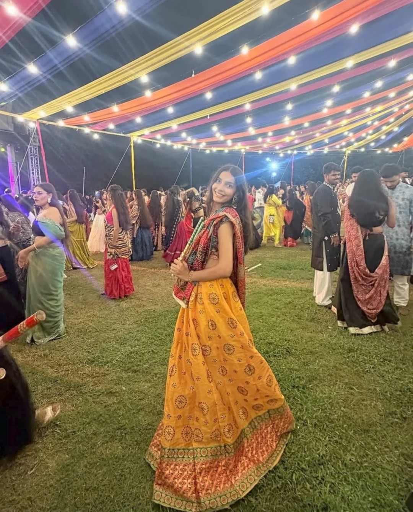
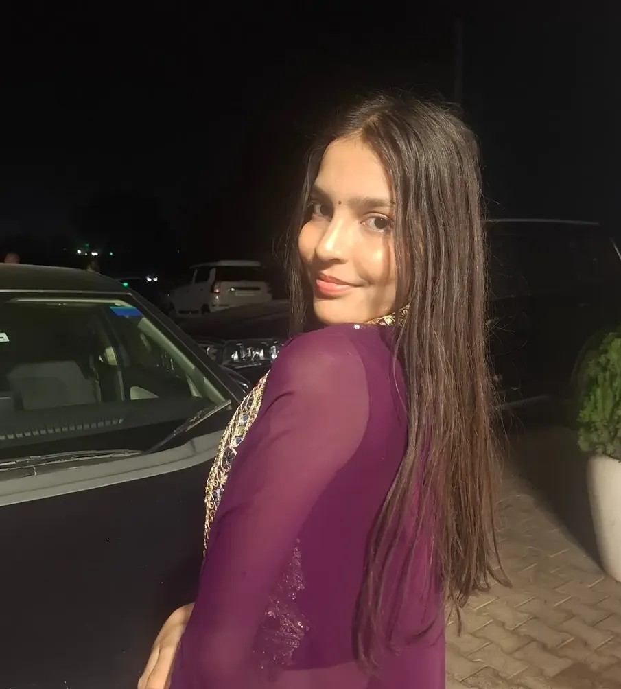
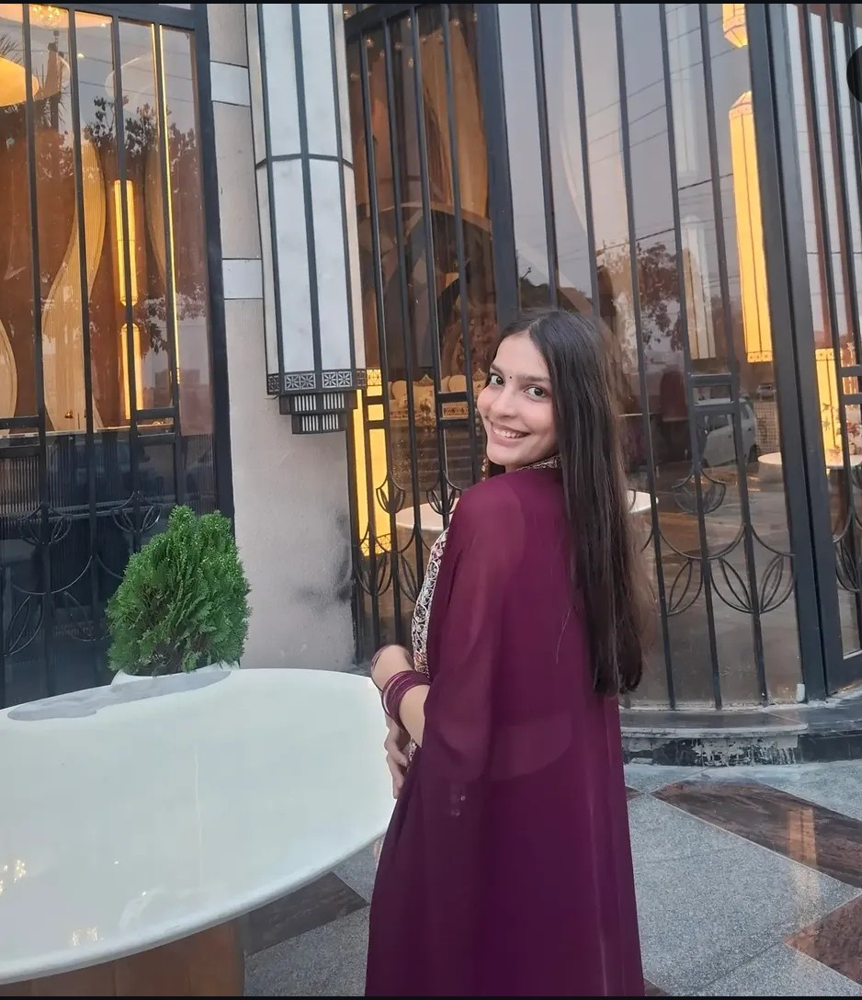
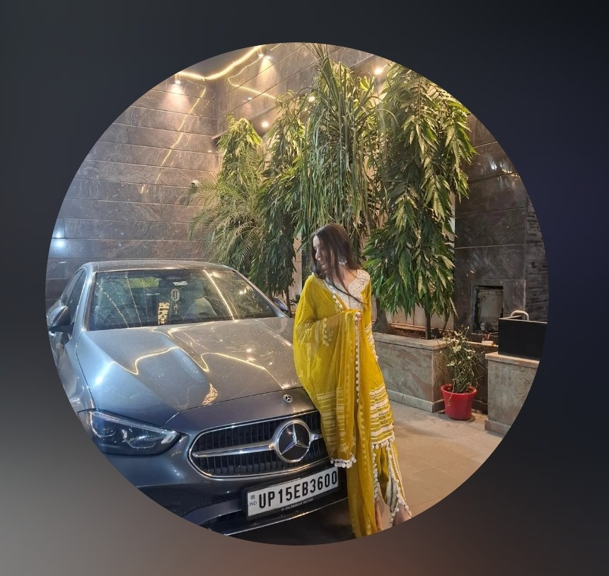

STOP 01 / 04✳
Some journeys become familiar.
Same bus, familiar faces, and little moments that make the ride feel less like just a ride.
01 of 04
A VERY IMPORTANT LITTLE QUESTION
Nothing serious, promise. Just pick a little challenge…
and maybe discover there is someone who makes
your day a bit brighter.
BEFORE WE BEGIN…
There are no wrong answers. Well… maybe one or two silly ones.
A LITTLE NOTE FOR SHAGUN
Nothing grand. Just a tiny journey for someone who makes an ordinary ride a little brighter.
Best enjoyed at your own pace.
YOUR LITTLE ROUTE
Some moments are small while they happen, then somehow stay with us. Take your time.

Same bus, familiar faces, and little moments that make the ride feel less like just a ride.
LITTLE MOMENTS
Four little frames for moments worth keeping, big or small.



A NOTE, IN YOUR OWN TIME
Nothing to figure out. Just a few honest words.
Hey [HER_NAME],
From,
[YOUR_NAME]
FINAL STOP · GOOD THINGS AHEAD
Sometimes the nicest part of a familiar route is the person who quietly makes it more memorable.
A LITTLE KEEPSAKE
Ordinary Days → Special Memories
Glad our paths crossed on that bus.
For the little moments that quietly become memories.
Some people make the everyday a little less ordinary. Thanks for being one of those people. ☼